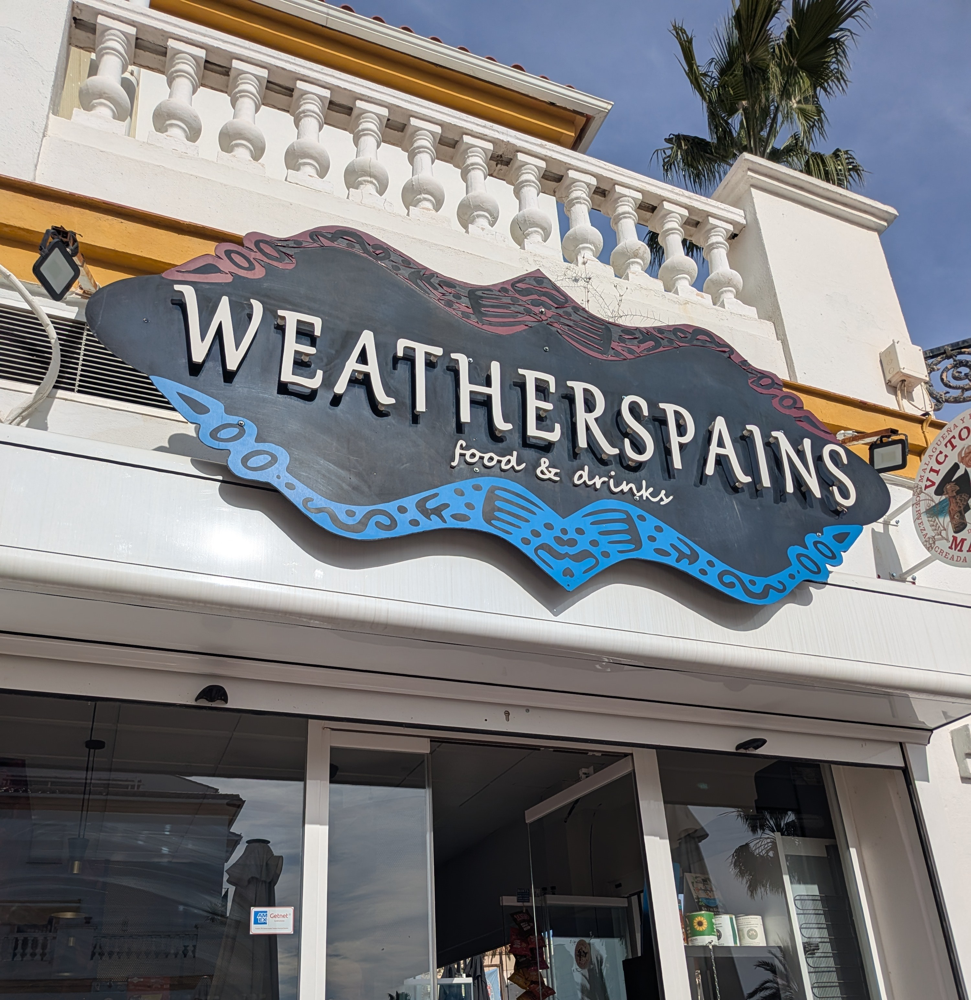
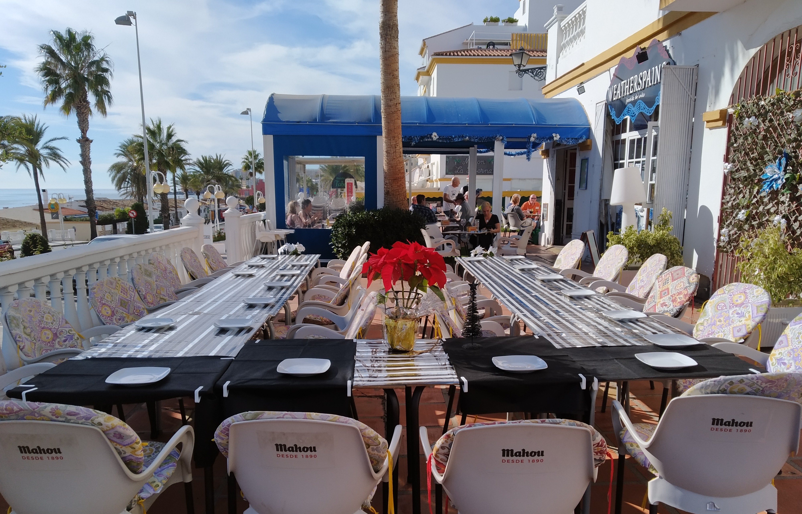

En el corazón de Benalmádena, ofrecemos una experiencia gastronómica única con los mejores productos locales y un ambiente acogedor. Especializados en cocina mediterránea y platos tradicionales españoles.
Av. Antonio Machado, 76, Local 14/C
29630 Benalmádena, Málaga